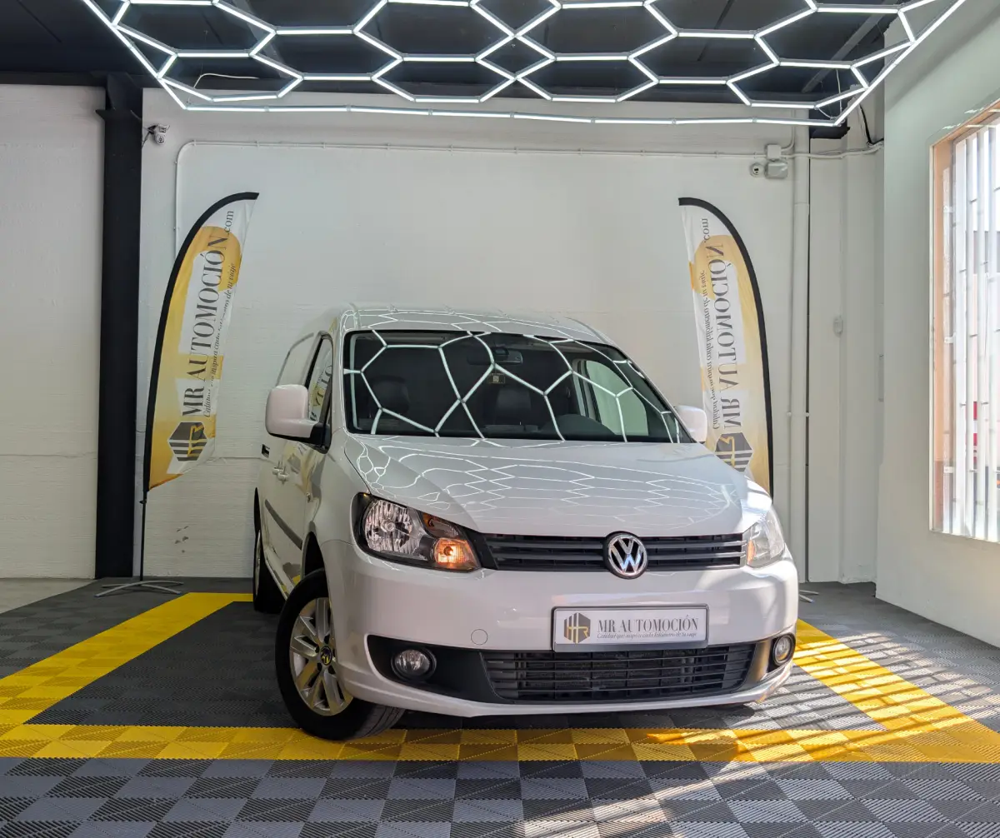

1 / 18La Volkswagen Caddy Furgon 1.6 TDI es una furgoneta industrial versátil y confiable , ideal para pequeñas y medianas empresas que requieren un vehículo eficiente para transportar mercancías . Este modelo se destaca por su motor diésel de 1.6 litros que ofrece un buen equilibrio entre potencia y eficiencia de combustible , lo que la convierte en una opción económica para el uso diario.
Además, con la compra de esta furgoneta, se incluye un año de garantía , lo que brinda tranquilidad al comprador sobre su inversión. También se realiza el cambio de titularidad , facilitando el proceso de adquisición. Para asegurar su óptimo funcionamiento, todas las revisiones del vehículo están al día , garantizando que esté en perfectas condiciones para enfrentar cualquier desafío laboral.
Sin duda, la Volkswagen Caddy es una opción atractiva para quienes buscan fiabilidad y funcionalidad en su negocio. Equipamiento: Retrovisores ajustables eléctricamente Espejos exteriores abatibles y calefactables Apoyabrazos delantero (consola central) Retrovisor interior antideslumbrante Espejo cortesía a la izquierda con tapa Espejo cortesía a la derecha con tapa Elevalunas eléctrico delantero Consola central con reposabrazos y 3 portavasos Cristales atérmicos Cierre centralizado con mando a distancia Ventanilla lateral derecha deslizante (1ª fila Regulación en altura manual del asiento conductor y cajón portaobjetos Tapizado Milán Puerta corredera en el lado derecho del compartimento de pasajero Climatizador Climatic Etc.
| Marca | Volkswagen |
|---|---|
| Modelo | VOLKSWAGEN Caddy Furgon 1.6 TDI 2011 |
| Año | None 2011 |
| Kilómetros | 224.825 km |
| Combustible | Diésel |
| Cambio | Manual |
| Potencia | 102 CV |
| Garantía | 1 Año |
| IVA | DEDUCIBLE INCLUIDO |
Quizá también te encaje